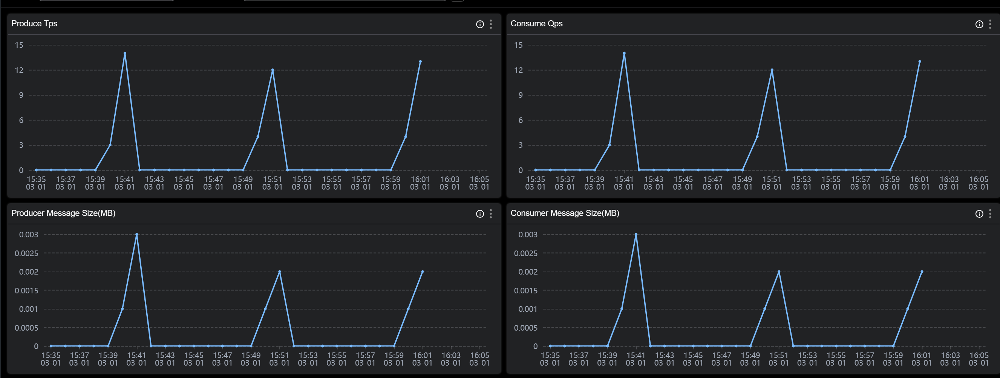

使用 SkyWalking 监控 RocketMQ Server
背景介绍
Apache RocketMQ 是一个开源的低延迟、高并发、高可用、高可靠的分布式消息中间件, 从SkyWalking OAP 10.0 版本开始, 新增了 对 RocketMQ Server的监控面板。本文将展示并介绍如何使用 Skywalking来监控RocketMQ
部署
流程
通过RocketMQ官方提供的RocketMQ exporter来采集RocketMQ Server数据,再通过opentelmetry-collector来拉取RocketMQ exporter并传输到skywalking oap服务来处理
DataFlow:

准备
启动顺序
- 启动
RocketMQ namesrv和broker - 启动
skywalking oap和ui - 启动
RocketMQ exporter - 启动
opentelmetry-collector
具体如何启动和配置请参考以上链接中官方教程.
需要注意下的是 opentelmetry-collector 的配置文件.
job_name: "rocketmq-monitoring" 请不要修改,否则 skywalking 不会处理这部分数据.
rocketmq-exporter 替换成RocketMQ exporter 的地址.
replacement: rocketmq-cluster 中的rocketmq-cluster如果想要使用下文介绍的服务分层功能,请自行定义为其他服务层级相匹配的名称.
oap 为 skywalking oap 地址,请自行替换.
receivers:
prometheus:
config:
scrape_configs:
- job_name: "rocketmq-monitoring"
scrape_interval: 30s
static_configs:
- targets: ['rocketmq-exporter:5557']
relabel_configs:
- source_labels: [ ]
target_label: cluster
replacement: rocketmq-cluster
exporters:
otlp:
endpoint: oap:11800
tls:
insecure: true
processors:
batch:
service:
pipelines:
metrics:
receivers:
- prometheus
processors:
- batch
exporters:
- otlp
监控指标
指标分为 三个维度, cluster,broker,topic
cluster监控


cluster 主要是站在集群的角度来统计展示,比如
Messages Produced Today 今日集群产生的消息数
Max CommitLog Disk Ratio 展示集群中磁盘使用率最高的broker
Total Producer Tps 集群生产者tps
broker 监控

broker 主要是站在节点的角度来统计展示,比如
Produce Tps 节点生产者tps
Producer Message Size(MB)节点生产消息大小
topic 监控


topic 主要是站在主题的角度来统计展示,比如
Consumer Group Count 消费该主题的消费者组个数
Consumer Latency(s) 消费者组的消费延时时间
Backlogged Messages 消费者组消费消息堆积
注意:topic 维度是整个 topic 来聚合,并不是在一个 broker 上的 topic 聚合,在 dashboard 上你也可以看到 broker 跟 topic 是平级的。
各个指标的含义可以在图标的 tip 上找到解释

更多指标可以参考文档
demo 已经在 skywalking showcase 上线,可以在上面看到展示效果
服务分层
skywalking 10 新增了重要功能Service Hierarchy,接收来自不同层级的服务数据,比如 java agent 上报,k8s 监控数据或者 otel 的监控数据. 根据设置规则如果发现这些服务名称符合匹配规则,则可以将这些不同层级的服务联系起来。
如下图所示：
skywalking 采集部署在 k8s 的 RocketMQ 服务端的k8s 数据,并接收来自 otel 的 RocketMQ 服务端监控数据,根据匹配规则这些服务具有相同的服务名称,则可以在 ui 上观察到它们的联系